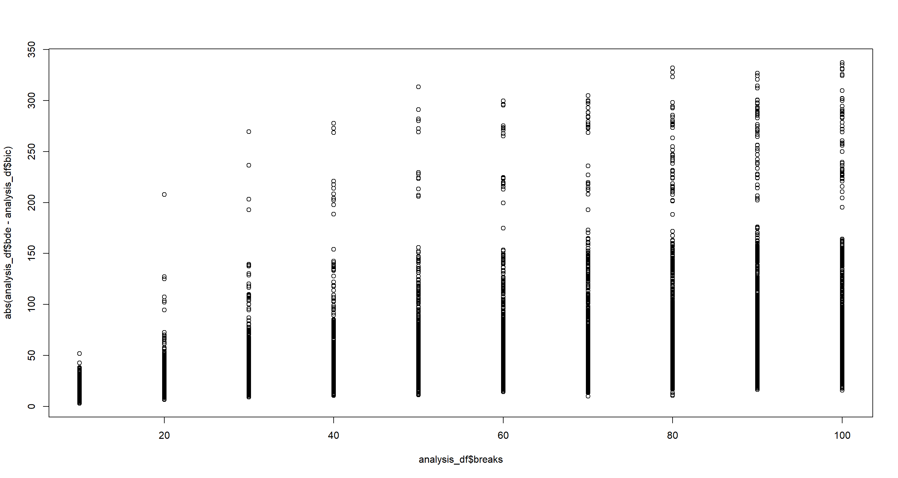

Bayesian Network Inference
Material
Most of the material in these chapters has already been covered in previous material, so the following summary is rather brief:
Please refer to earlier material for introductions of queries, structure learning, and parameter learning in theory and in R.
Exercises
These are answers and solutions to the exercises at the end of chapter 4 in Bayesian Networks in R with Applications in Systems Biology by by Radhakrishnan Nagarajan, Marco Scutari & Sophie Lèbre and Part 4 in Bayesian Networks with Examples in R by M. Scutari and J.-B. Denis. Much of my inspiration for these solutions, where necessary, by consulting the solutions provided by the authors themselves as in the appendix.
R Environment
For today’s exercise, I load the following packages:
library(bnlearn)
library(gRain)
library(GeneNet)
library(penalized)
Nagarajan 4.1
Apply the junction tree algorithm to the validated network structure from Sachs et al. (2005), and draw the resulting undirected triangulated graph.
Taken directly from the solutions:

Nagarajan 4.2
Consider the Sachs et al. (2005) data used in Sect. 4.2.
First, let’s read the data in like it was done in the book:
isachs <- read.table("sachs.interventional.txt", header = TRUE, colClasses = "factor")
isachs <- isachs[, 1:11]
for (i in names(isachs)) {
levels(isachs[, i]) <- c("LOW", "AVG", "HIGH")
}
This .txt file can be downloaded from here.
Part A
Perform parameter learning with the
bn.fitfunction frombnlearnand the validated network structure. How do the maximum likelihood estimates differ from the Bayesian ones, and how do the latter vary as the imaginary sample size increases?
sachs_DAG <- model2network(paste0(
"[PKC][PKA|PKC][praf|PKC:PKA]",
"[pmek|PKC:PKA:praf][p44.42|pmek:PKA]",
"[pakts473|p44.42:PKA][P38|PKC:PKA]",
"[pjnk|PKC:PKA][plcg][PIP3|plcg]",
"[PIP2|plcg:PIP3]"
))
f4.1_mle <- bn.fit(sachs_DAG, isachs, method = "mle")
f4.1_bayes1 <- bn.fit(sachs_DAG, isachs, method = "bayes", iss = 1)
f4.1_bayes10 <- bn.fit(sachs_DAG, isachs, method = "bayes", iss = 10)
f4.1_bayes100 <- bn.fit(sachs_DAG, isachs, method = "bayes", iss = 100)
I omit the outputs of the individual objects created above here for space.
From a theoretical standpoint mle estimates may contain NA values while bayes-inferred estimates do not. That being said, I did not see any NA outputs in the maximum likelihood estimates here.
As far as iss is concerned, higher iss values result in smoother estimates.
Part B
Node
PKAis parent of all the nodes in thepraf → pmek → p44.42 → pakts473chain. Use the junction tree algorithm to explore how our beliefs on those nodes change when we have evidence thatPKAis“LOW”, and whenPKAis“HIGH”.
mle_jtree <- compile(as.grain(f4.1_mle))
query <- c("praf", "pmek", "p44.42", "pakts473")
## baseline query
querygrain(mle_jtree, nodes = query)
## $pmek
## pmek
## LOW AVG HIGH
## 0.5798148 0.3066667 0.1135185
##
## $praf
## praf
## LOW AVG HIGH
## 0.5112963 0.2835185 0.2051852
##
## $p44.42
## p44.42
## LOW AVG HIGH
## 0.1361111 0.6062963 0.2575926
##
## $pakts473
## pakts473
## LOW AVG HIGH
## 0.60944444 0.31037037 0.08018519
## low evidence
mle_jprop <- setFinding(mle_jtree, nodes = "PKA", states = "LOW")
querygrain(mle_jprop, nodes = query)
## $pmek
## pmek
## LOW AVG HIGH
## 0.35782443 0.08874046 0.55343511
##
## $praf
## praf
## LOW AVG HIGH
## 0.1145038 0.1746183 0.7108779
##
## $p44.42
## p44.42
## LOW AVG HIGH
## 0.3435115 0.1965649 0.4599237
##
## $pakts473
## pakts473
## LOW AVG HIGH
## 0.2967557 0.2977099 0.4055344
## high evidence
mle_jprop <- setFinding(mle_jtree, nodes = "PKA", states = "HIGH")
querygrain(mle_jprop, nodes = query)
## $pmek
## pmek
## LOW AVG HIGH
## 0.981418919 0.016891892 0.001689189
##
## $praf
## praf
## LOW AVG HIGH
## 0.83614865 0.13006757 0.03378378
##
## $p44.42
## p44.42
## LOW AVG HIGH
## 0.07263514 0.68918919 0.23817568
##
## $pakts473
## pakts473
## LOW AVG HIGH
## 0.7652027 0.2347973 0.0000000
PKA inhibits all other nodes. When PKA is HIGH then the LOW probability of all other nodes increases.
When PKA is HIGH, the activity of all the proteins corresponding to the query nodes is inhibited (the LOW probability increases and the HIGH decreases). When PKA is LOW, the opposite is true (the LOW probability decreases and the HIGH increases).
Part C
Similarly, explore the effects on
pjnkof evidence onPIP2,PIP3, andplcg.
mle_jprop <- setFinding(mle_jtree,
nodes = c("PIP2", "PIP3", "plcg"),
states = rep("LOW", 3)
)
## baseline query
querygrain(mle_jtree, nodes = "pjnk")
## $pjnk
## pjnk
## LOW AVG HIGH
## 0.53944444 0.38277778 0.07777778
## low evidence
querygrain(mle_jprop, nodes = "pjnk")
## $pjnk
## pjnk
## LOW AVG HIGH
## 0.53944444 0.38277778 0.07777778
Turns out pjnk is unaffected by the others. The DAG shown in the answers to exercise Nagarajan 4.1 supports this.
Nagarajan 4.3
Consider the marks data set analyzed in Sect. 2.3.
data(marks)
Part A
Learn both the network structure and the parameters with likelihood based approaches, i.e., BIC or AIC, for structure learning and maximum likelihood estimates for the parameters.
f4.3_dag <- hc(marks, score = "bic-g")
f4.3_dag
##
## Bayesian network learned via Score-based methods
##
## model:
## [MECH][VECT|MECH][ALG|MECH:VECT][ANL|ALG][STAT|ALG:ANL]
## nodes: 5
## arcs: 6
## undirected arcs: 0
## directed arcs: 6
## average markov blanket size: 2.40
## average neighbourhood size: 2.40
## average branching factor: 1.20
##
## learning algorithm: Hill-Climbing
## score: BIC (Gauss.)
## penalization coefficient: 2.238668
## tests used in the learning procedure: 34
## optimized: TRUE
f4.3_bn <- bn.fit(f4.3_dag, marks)
f4.3_bn
##
## Bayesian network parameters
##
## Parameters of node MECH (Gaussian distribution)
##
## Conditional density: MECH
## Coefficients:
## (Intercept)
## 38.95455
## Standard deviation of the residuals: 17.48622
##
## Parameters of node VECT (Gaussian distribution)
##
## Conditional density: VECT | MECH
## Coefficients:
## (Intercept) MECH
## 34.3828788 0.4160755
## Standard deviation of the residuals: 11.01373
##
## Parameters of node ALG (Gaussian distribution)
##
## Conditional density: ALG | MECH + VECT
## Coefficients:
## (Intercept) MECH VECT
## 25.3619809 0.1833755 0.3577122
## Standard deviation of the residuals: 8.080725
##
## Parameters of node ANL (Gaussian distribution)
##
## Conditional density: ANL | ALG
## Coefficients:
## (Intercept) ALG
## -3.574130 0.993156
## Standard deviation of the residuals: 10.50248
##
## Parameters of node STAT (Gaussian distribution)
##
## Conditional density: STAT | ALG + ANL
## Coefficients:
## (Intercept) ALG ANL
## -11.1920114 0.7653499 0.3164056
## Standard deviation of the residuals: 12.60646
Part B
Query the network learned in the previous point for the probability to have the marks for both
STATandMECHabove 60, given evidence that the mark forALGis at most 60. Are the two variables independent given the evidence onALG?
cpquery(f4.3_bn, event = (STAT > 60) & (MECH > 60), evidence = (ALG <= 60), n = 1e7)
## [1] 0.009562571
cpquery(f4.3_bn, event = (STAT > 60), evidence = (ALG <= 60), n = 1e7)
## [1] 0.08289571
cpquery(f4.3_bn, event = (MECH > 60), evidence = (ALG <= 60), n = 1e7)
## [1] 0.0683385
The conditional probability of the two outcomes (0.0095912) is not the same as the product of their corresponding marginal probabilities (0.0056668). Conclusively, we can say that STAT and MECH are not independent conditional on ALG.
Part C
What is the (conditional) probability of having an average vote (in the [60,70] range) in both
VECTandMECHwhile having an outstanding vote inALG(at least 90)?
cpquery(f4.3_bn,
event = ((MECH >= 60) & (MECH <= 70)) | ((VECT >= 60) & (VECT <= 70)),
evidence = (ALG >= 90),
n = 1e7
)
## [1] 0.2872254
Nagarajan 4.4
Using the dynamic Bayesian network
dbn2from Sect. 4.3, investigate the effects of genes257710_atand255070_atobserved at time t-2 on gene265768_atat time t.
This is the network in the chapter according to the errata corrige here:
data(arth800)
subset <- c(60, 141, 260, 333, 365, 424, 441, 512, 521, 578, 789, 799)
arth12 <- arth800.expr[, subset]
x <- arth12[1:(nrow(arth12) - 2), ]
y <- arth12[-(1:2), "265768_at"]
lambda <- optL1(response = y, penalized = x, trace = FALSE)$lambda
lasso.t <- penalized(response = y, penalized = x, lambda1 = lambda, trace = FALSE)
y <- arth12[-(1:2), "245094_at"]
colnames(x)[12] <- "245094_at1"
lambda <- optL1(response = y, penalized = x, trace = FALSE)$lambda
lasso.s <- penalized(response = y, penalized = x, lambda1 = lambda, trace = FALSE)
## errate comes in here
dbn2 <- empty.graph(c(
"265768_at", "245094_at1",
"258736_at", "257710_at", "255070_at",
"245319_at", "245094_at"
))
dbn2 <- set.arc(dbn2, "245094_at", "265768_at")
for (node in names(coef(lasso.s))[-c(1, 6)]) {
dbn2 <- set.arc(dbn2, node, "245094_at")
}
dbn2 <- set.arc(dbn2, "245094_at1", "245094_at")
dbn2.data <- as.data.frame(x[, nodes(dbn2)[1:6]])
dbn2.data[, "245094_at"] <- y
dbn2.data[, "245094_at1"] <- arth12[2:(nrow(arth12) - 1), "245094_at"]
dbn2.fit <- bn.fit(dbn2, dbn2.data)
## errata stops here
dbn2.fit[["265768_at"]] <- lasso.t
dbn2.fit[["245094_at"]] <- lasso.s
This is the solution to the exercise:
set.seed(42)
cpquery(dbn2.fit, event = (`265768_at` > 8), evidence = (`257710_at` > 8))
## [1] 0.3590734
cpquery(dbn2.fit, event = (`265768_at` > 8), evidence = (`255070_at` > 8))
## [1] 0.5753049
cpquery(dbn2.fit, event = (`265768_at` > 8), evidence = TRUE)
## [1] 0.4396
High expression levels of gene 257710_at at time t −2 reduce the probability of high expression levels of gene 265768_at at time t; the opposite is true for gene 255070_at.
Scutari 4.1
Consider the survey data set from Chapter 1.
The data can be obtained from here:
survey <- read.table("survey.txt", header = TRUE, colClasses = "factor")
Remember, this is the corresponding DAG we know to be true:

Part A
Learn a BN with the IAMB algorithm and the asymptotic mutual information test.
s4.1_dag <- iamb(survey, test = "mi")
s4.1_dag
##
## Bayesian network learned via Constraint-based methods
##
## model:
## [undirected graph]
## nodes: 6
## arcs: 4
## undirected arcs: 4
## directed arcs: 0
## average markov blanket size: 1.33
## average neighbourhood size: 1.33
## average branching factor: 0.00
##
## learning algorithm: IAMB
## conditional independence test: Mutual Information (disc.)
## alpha threshold: 0.05
## tests used in the learning procedure: 85
Part B
Learn a second BN with IAMB but using only the first 100 observations of the data set. Is there a significant loss of information in the resulting BN compared to the BN learned from the whole data set?
s4.1_dagB <- iamb(survey[1:1e2, ], test = "mi")
s4.1_dagB
##
## Bayesian network learned via Constraint-based methods
##
## model:
## [undirected graph]
## nodes: 6
## arcs: 1
## undirected arcs: 1
## directed arcs: 0
## average markov blanket size: 0.33
## average neighbourhood size: 0.33
## average branching factor: 0.00
##
## learning algorithm: IAMB
## conditional independence test: Mutual Information (disc.)
## alpha threshold: 0.05
## tests used in the learning procedure: 42
We discover far fewer arcs!
Part C
Repeat the structure learning in the previous point with IAMB and the Monte Carlo and sequential Monte Carlo mutual information tests. How do the resulting networks compare with the BN learned with the asymptotic test? Is the increased execution time justified?
s4.1_dagC_mcmc <- iamb(survey[1:1e2, ], test = "mc-mi")
s4.1_dagC_mcmc
##
## Bayesian network learned via Constraint-based methods
##
## model:
## [undirected graph]
## nodes: 6
## arcs: 1
## undirected arcs: 1
## directed arcs: 0
## average markov blanket size: 0.33
## average neighbourhood size: 0.33
## average branching factor: 0.00
##
## learning algorithm: IAMB
## conditional independence test: Mutual Information (disc., MC)
## alpha threshold: 0.05
## permutations: 5000
## tests used in the learning procedure: 38
s4.1_dagC_smc <- iamb(survey[1:1e2, ], test = "smc-mi")
s4.1_dagC_smc
##
## Bayesian network learned via Constraint-based methods
##
## model:
## [undirected graph]
## nodes: 6
## arcs: 1
## undirected arcs: 1
## directed arcs: 0
## average markov blanket size: 0.33
## average neighbourhood size: 0.33
## average branching factor: 0.00
##
## learning algorithm: IAMB
## conditional independence test: Mutual Information (disc., Seq. MC)
## alpha threshold: 0.05
## permutations: 5000
## tests used in the learning procedure: 38
We do not discover more arcs, and the outputs of the two asymptotic tests are equal for this case:
all.equal(s4.1_dagC_mcmc, s4.1_dagC_smc, s4.1_dagB)
## [1] TRUE
Scutari 4.2
Consider again the survey data set from Chapter 1.
The data can be obtained from here:
survey <- read.table("survey.txt", header = TRUE, colClasses = "factor")
Part A
Learn a BN using Bayesian posteriors for both structure and parameter learning, in both cases with
iss = 5.
s4.2_dag <- hc(survey, score = "bde", iss = 5)
s4.2_bn <- bn.fit(s4.2_dag, survey, method = "bayes", iss = 5)
modelstring(s4.2_bn)
## [1] "[R][E|R][T|R][A|E][O|E][S|E]"
Part B
Repeat structure learning with hc and 3 random restarts and with tabu. How do the BNs differ? Is there any evidence of numerical or convergence problems?
s4.2_hc <- hc(survey, score = "bde", iss = 5, restart = 3)
modelstring(s4.2_hc)
## [1] "[T][R|T][E|R][A|E][O|E][S|E]"
s4.2_tabu <- tabu(survey, score = "bde", iss = 5)
modelstring(s4.2_tabu)
## [1] "[O][S][E|O:S][A|E][R|E][T|R]"
The Bayesian networks inferred here differ quite substantially in their DAG structures.
The random-start hill-climbing algorithm builds a DAG structure closer to the validated structure which is supported by the score:
score(s4.2_hc, survey)
## [1] -1998.432
score(s4.2_tabu, survey)
## [1] -1999.733
Part C
Use increasingly large subsets of the survey data to check empirically that BIC and BDe are asymptotically equivalent.
set.seed(42)
breaks <- seq(from = 10, to = 100, by = 10) # percentage of data
analysis_df <- data.frame(
bde = NA,
bic = NA,
breaks = NA
)
for (k in 1:1e3) {
bde_vec <- c()
bic_vec <- c()
for (i in breaks) {
samp <- sample(1:nrow(survey), nrow(survey) / i)
samp <- survey[samp, ]
s4.2_bde <- hc(samp, score = "bde", iss = 5)
s4.2_bic <- hc(samp, score = "bic")
bde_vec <- c(bde_vec, score(s4.2_bde, survey))
bic_vec <- c(bic_vec, score(s4.2_bic, survey))
}
analysis_df <- rbind(
analysis_df,
data.frame(
bde = bde_vec,
bic = bic_vec,
breaks = breaks
)
)
}
analysis_df <- na.omit(analysis_df)
plot(
x = analysis_df$breaks,
y = abs(analysis_df$bde - analysis_df$bic)
)

Scutari 4.3
Consider the marks data set from Section 4.7.
data(marks)
Part A
Create a bn object describing the graph in the bottom right panel of Figure 4.5 and call it
mdag.
mdag <- model2network(paste0(
"[ANL][MECH][LAT|ANL:MECH]",
"[VECT|LAT][ALG|LAT][STAT|LAT]"
))
Part B
Construct the skeleton, the CPDAG and the moral graph of
mdag.
mdag_skel <- skeleton(mdag)
mdag_cpdag <- cpdag(mdag)
mdag_moral <- moral(mdag)
Part C
Discretise the marks data using “interval” discretisation with 2, 3 and 4 intervals.
dmarks_2 <- discretize(marks, "interval", breaks = 2)
dmarks_3 <- discretize(marks, "interval", breaks = 3)
dmarks_4 <- discretize(marks, "interval", breaks = 4)
Part D
Perform structure learning with hc on each of the discretised data sets; how do the resulting DAGs differ?
hc_2 <- hc(dmarks_2)
modelstring(hc_2)
## [1] "[MECH][VECT|MECH][ALG|VECT][ANL|ALG][STAT|ALG]"
hc_3 <- hc(dmarks_3)
modelstring(hc_3)
## [1] "[MECH][ALG|MECH][ANL|ALG][STAT|ALG][VECT|ANL]"
hc_4 <- hc(dmarks_4)
modelstring(hc_4)
## [1] "[MECH][VECT][ALG][ANL|ALG][STAT|ANL]"
Quite evidently, as we increase the number of intervals, we break conditional relationships so much so that fewer arcs are identified.
Session Info
sessionInfo()
## R version 4.2.1 (2022-06-23 ucrt)
## Platform: x86_64-w64-mingw32/x64 (64-bit)
## Running under: Windows 10 x64 (build 19044)
##
## Matrix products: default
##
## locale:
## [1] LC_COLLATE=English_Germany.utf8 LC_CTYPE=English_Germany.utf8 LC_MONETARY=English_Germany.utf8 LC_NUMERIC=C LC_TIME=English_Germany.utf8
##
## attached base packages:
## [1] stats graphics grDevices utils datasets methods base
##
## other attached packages:
## [1] penalized_0.9-52 survival_3.4-0 GeneNet_1.2.16 fdrtool_1.2.17 longitudinal_1.1.13 corpcor_1.6.10 gRain_1.3.11 gRbase_1.8.7 bnlearn_4.8.1
##
## loaded via a namespace (and not attached):
## [1] Rcpp_1.0.9 highr_0.9 bslib_0.4.0 compiler_4.2.1 BiocManager_1.30.18 jquerylib_0.1.4 R.methodsS3_1.8.2 R.utils_2.12.0 tools_4.2.1
## [10] digest_0.6.29 jsonlite_1.8.0 evaluate_0.16 R.cache_0.16.0 lattice_0.20-45 pkgconfig_2.0.3 rlang_1.0.5 igraph_1.3.4 Matrix_1.5-1
## [19] graph_1.74.0 cli_3.3.0 rstudioapi_0.14 Rgraphviz_2.40.0 yaml_2.3.5 parallel_4.2.1 blogdown_1.13 xfun_0.33 fastmap_1.1.0
## [28] styler_1.8.0 stringr_1.4.1 knitr_1.40 vctrs_0.4.1 sass_0.4.2 stats4_4.2.1 grid_4.2.1 R6_2.5.1 RBGL_1.72.0
## [37] rmarkdown_2.16 bookdown_0.29 purrr_0.3.4 magrittr_2.0.3 splines_4.2.1 BiocGenerics_0.42.0 htmltools_0.5.3 stringi_1.7.8 cachem_1.0.6
## [46] R.oo_1.25.0